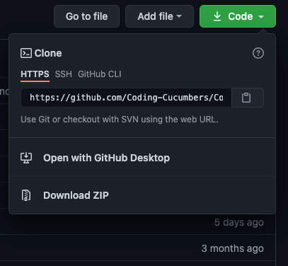

Intro To Git For Beginners [Full Guide]
Start with the most important concepts and commands


Introduction
Through this guide, I will be sharing more about my personal experience learning Git. I hope it will demystify what Git is all about and get you more comfortable using it! In brief, I will share my notes on what Git is, analogies that helped me understand concepts, terminal Git commands and Git workflows.
Content Page
What is Git
What exactly is Git? Well, Git is an open-source version control software and it is wildly popular. Git is a crucial software skill to learn if you wish to work in groups or collaboratively. Basically, Git allows for you to track and store different versions of a repository (also known as repo). This enables many developers to work on the same project in parallel without losing any code.
Some of you may have heard of another software called Github and wonder are they the same thing? In short, they are not! They can be used to complement each other when working on projects but they have inherent differences. Read more about Git VS Github in this article if you are curious.
Don’t be too concerned if you are still unclear of Git. Read through the rest of the article and return to this introduction section, I am confident you will thoroughly understand it!
Downloading Git
First step is to download the relevant Git version for your operating system (OS) from the Git website.
To ensure that you have downloaded the software correctly, use the command
git --version
In your terminal and you should get a response something like this
git version 2.31.1
If the response is “command not found” it means that you did not install Git properly.
Starting to Use Git
There were 2 different starting points for me when it comes to Git. One starting point is when I wanted to create my own Git repo while the other is when I joined a company or team that already has an existing Git repo.
Creating Your Own Repo
Beginning with the former, I created a folder for my project called Coding-Cucumbers. With the terminal, I navigated to that project folder with the help of the command “cd”. For example, my current path is “user/bryan” and my Coding-Cucumbers project is situated in the folder “bryan”. As such, to enter the project I use
cd Coding-Cucumbers
As folder names are case sensitive, do take note of upper and lower case letters. In another instance, if the project is located in the “user” folder, you would need to navigate backwards and you can use the command
cd ..
Which goes back a directory (and then cd into Coding-Cucumbers at this directory level). These basic terminal commands are worthwhile to memorise especially when working with Git on the terminal. If it helps you to remember, “cd” stands for change directory. Next, to initialise the project as a Git repo, use the command
git init
It’s as simple as that, we created our git repo.
Cloning a Repo
As for the second starting point, I recall I had just joined a project and had to clone all the repositories into my local. This would often be the case when you join an existing project or company.
cloning with github
I started off with logging into my Github account, and finding the repos that were shared with me. By clicking on the green code button, a small pop-up would appear and I copied the HTTPS link with the clipboard icon.
After launching my terminal, I cd into a folder where I would like to store the repos, for example in ‘user/bryan’, and type the command
git clone “the-copied-url-from-above”
And done! We cloned the repo in our local. Of course, there are other ways of cloning the repo with SSH (Secure Shell) or Github CLI (command line interface) but I think the easiest way (also recommended by Github themselves) is to use the HTTPS method.
Git Flow and Essential Concepts
Stage Commit Status
From either starting point, I make some changes to the repo like implementing a new function to the file cucumber.go.
I can check the that there has been edits to the repo by using the command
git status
And the response is
On branch main
Changes not staged for commit:
(use "git add ..." to update what will be committed)
(use "git restore ..." to discard changes in working directory)
modified: cucumber.go
no changes added to commit (use "git add" and/or "git commit -a")
The first line shows us what branch we are currently in which is main. We will go over the concept of branches later on. Under the section changes not staged for commit, we can see all the files that have been modified and in our case it would only be the cucumber.go file.
Next, we have to stage and commit the file. Using the commands
git add .
To stage the file, the “.” means to stage all the files that have been modified. Alternatively, if you wish to stage only specific files you can use
git add file_1 file_2
To commit the modified staged files, use
git commit -m "added function to repo"
-m option refers to the commit message and the string following it is the actual message. The message should be concise and informative. In the future, if we want to look through all the commits and versions of the repo, we can quickly deduce what each commit did with the commit message.
You might wonder, why did Git create a staging area and not just commit the code immediately? Why is there an additional step before committing? Well, if we are working with only 1 file, it is pretty redundant. However, if we have multiple files, staging would allow for more intentional commits. We have 2 unrelated files and committing both in the same commit wouldn’t be as ideal/clean as committing each separately with a proper commit message for each. Another use case is if one of the files is still a work in progress, you can still commit the other file first.
Branch Push Merge
So far, we have made an edit and committed it to our branch. In the subsequent part, we will go through how to push and merge your branches. But we first need to understand the concept of branches.

pictorial representation of how branching works
When you branch from the main, you are taking a snapshot of the current version of main and diverging it to allow for edits to be made. Needless to say, once you have branched the edits will be confined to the branch itself. Once the edit is made, the branch is then merged back into the main. The reason we create multiple branches is to allow for different edits to be made at the same time. You can also branch off from other branches, not only main.
Remote master usually refers to the Production branch in a company/project and is also the actual functional code being used. It is usually hosted on a cloud platform such as Bitbucket or Github. What we are doing when we clone the repo is actually making a replica of the Remote master in our local computer and usually that copy is called main.
One important concept is the difference between remote and local environments/ branches. The remote and local branches are not in sync, even if they have the same name or were cloned from each other. So if you make a change in your local main, the remote master will not be affected unless you push the main branch to github (aka origin) and merge the branch with master.
Let’s move on to an example of how we can branch. We found a bug in the cucumber.go file in the remote master and we want to fix it so the first step is to ensure our local main is the most updated. As such, we will use the command
git pull
This command is actually a combination of “git fetch” and “git merge”. We are fetching the remote master branch to our local and merging it instantly with local main. This will help us achieve the goal of having the latest version of the main code in our main, where we can have access to the bug. Next we will branch from main using the command
git branch name_of_branch
Just like that, a new branch is created. However, we are now still in the branch main, we need to switch to the newly created branch as such
git checkout name_of_branch
You can also use those 2 commands in 1 single command which has the same effect
git checkout -b name_of_branch
Now that we are in the new branch, we can make all the necessary edits to fix the bug. Once completed, we want to merge our new code back with the remote master branch so that the bug is no longer in deployment. Now, we will have to go through the same steps in the Git Flow section above, where we need to stage and commit the new code to the branch.
Putting things in perspective, we are still working on our local, which means that the new branch is absent in our github repository where our deployment branch/production/master is located. Thus we need to execute this command
git push origin name_of_branch
Which pushes the new branch to the github repo also known as origin. Thereafter, a pull request is made, it is optional but highly recommended especially if you are a beginner. It is basically asking a senior/ peer to review the work done in your code and if it gets approved, the code will be merged.
creating a pull request on github
If you are using github, the new branch and master can be merged simply with the interface on Github. But if you are skipping the pull request stage and want to merge the code in your terminal, you can use this command
git merge name_of_branch
Do note you need to be in master to merge the new branch into master. If you are in the new branch and execute the command merge, master will be merged into the branch, which is not what we want.
Check out this blog post for a quick summary of the important git concepts that were just covered.
And with that, we covered the main bulk of how to use git and all the commands you need to get started. In the next section, I will be sharing more about some more git features that will make your life much easier as a developer. It might seem like a lot of information right now, so don’t worry too much if it is overwhelming. You can start working with git first and visit the next section of the article later when you are more comfortable with git.
Git features that will make your life easier
I will be sharing about these 4 features below and their use cases.
Features
Fetch
Fetch is rather similar to Pull. Fetch downloads the branch into local but this command does not merge the branch with your current head branch in the local repository (unlike pull). Most of the time when I use fetch, it is to bring a branch from the remote to local so that I can branch off from it and make edits. The command is
git fetch origin name_of_branch
Cherry Picking
Let’s say you made some changes to your branch a few commits ago and you would like to reuse those changes on another branch. But rewriting all those changes to your latest copy is such a chore. Fortunately, we can use cherry picking to specifically select those changes and apply them to your current copy, saving you a huge hassle. The command is
git cherry-pick commit_hash
To clarify, every commit you make will have a commit hash generated by git. You need that commit hash to indicate which commit (of all the commits of the repo) you want to cherry pick.
finding commit hash
You can find the commit hash on github here.
Reset
In order to switch between branches in your local, your current working branch must be clean i.e. free from uncommitted changes. One way to proceed is to discard all the changes on your branch. This can be achieved by the reset command that resets the staging area and working directory to the last commit. I also use the concept of resetting when I find out that the edits I made to the branch are no longer necessary and I want to discard them. The commands are
git reset --hard HEAD
Or
git checkout -- .
Essentially what these commands do is to undo local changes on the branch you are one. Do use them carefully because once those uncommitted changes are discarded, you will be not able to retrieve them.
Stash
While working on branch A, you were urgently tasked to review some code on branch B. However, you are unable to switch between branches as Git doesn’t allow you to do so without committing your changes to branch A. Stash function allows you to store your changes in the code in a stash file and you will be able to reapply the stash file changes back to branch A later. Now you are free to move between branches without any loss of code. The command goes
git stash
In order to reapply those uncommitted changes to whatever branch of your choice, you need to use the command
git stash pop
This not only reapplies the changes to the branch but the stash file is also deleted. In the case that you want to apply the same stash file to multiple branches, you should use
git stash apply
Conclusion
And that is it, we are done with the introductory guide to git for beginners. Once you have mastered these commands and concepts, you should be able to navigate the world of git very smoothly. Congratulations on your hard work!
I also wrote another article about conflict resolution in git, how they arise and how to resolve them. When I was an intern developer, I rarely dealt with conflicts and its resolution because they are more thorny. Usually the senior developers would handle the mess. However, if you are interested in developing your git skills beyond the beginner level, reading the article will definitely help. Stay cool, Cucumbers!